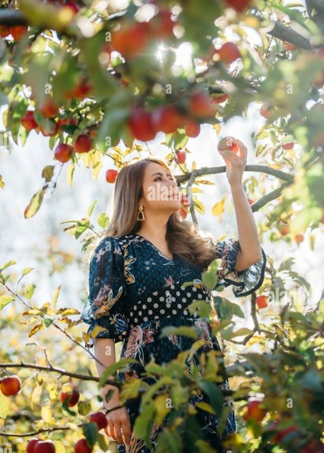

Respected Professor,
I am not much into sports, so to create neutral content and avoid any debate about sports that people love,
I preferred to use fruits as a basic example.
Note: All the list is randomly generated; no sugar measurement or any kind of research has been done.
I have used the module idea, and AI to simply list down the common popular fruit names.
Thank you, professor
| Fruits Tier List (Ranked by Sugar Content) | |||||
|---|---|---|---|---|---|
| Tier | Fruit 1 | Fruit 2 | Fruit 3 | Fruit 4 | Fruit 5 |
| S | Avocado | Strawberry | Blackberry | Raspberry | Kiwi |
| A | Blueberry | Grapefruit | Peach |  Orange |
Plum |
| B | Nepali Himalayan Apple |
Pear | Mandarin | Guava | Melon |
| C | Pineapple | Mango | Fig | Cherries | Nectarine |
| D | Banana | Lychee | Dragon Fruit | Custard Apple | Grapes |
| F | Dates | Jackfruit | Watermelon | Tamarind | Raisin |